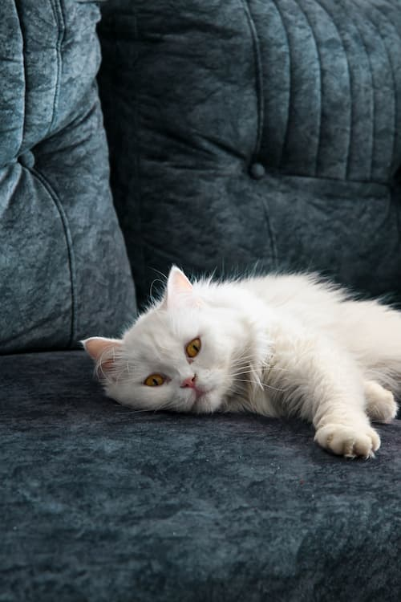
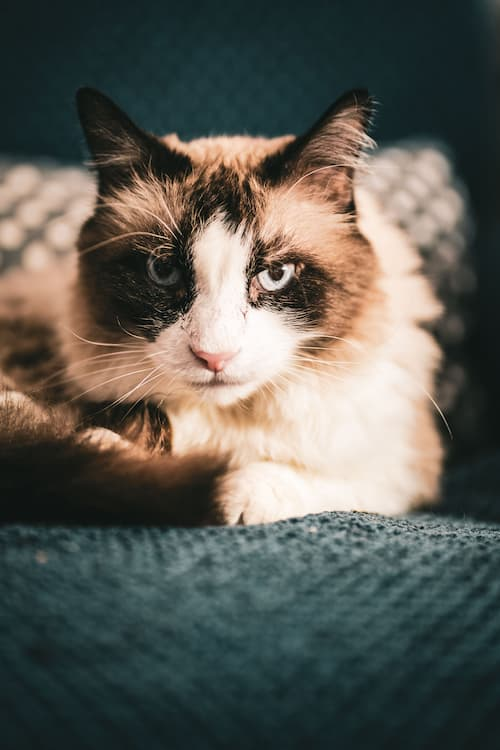
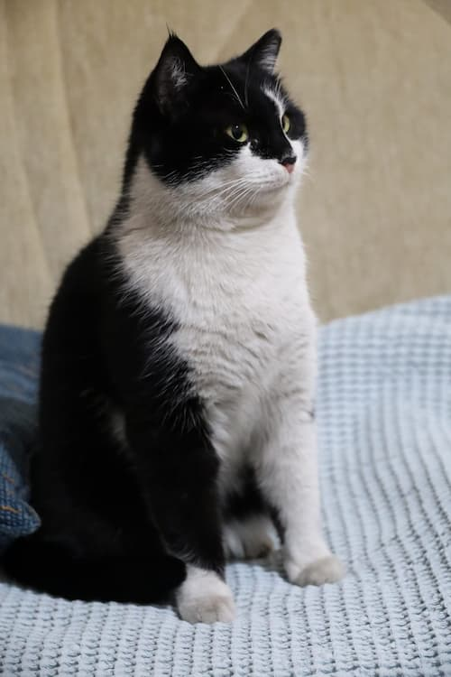

Luna

Age -
Unknown (Estimate 3-5 Years Old)
Personality Traits -
- Acts Spontaneously
- High-Energy
- Very Sociable

Age -
Unknown (Estimate 3-5 Years Old)
Personality Traits -

Age -
5 Years Old
Personality Traits -
